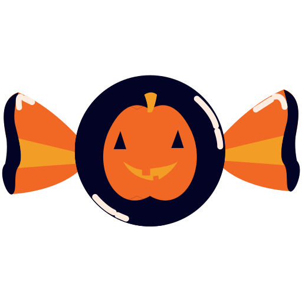
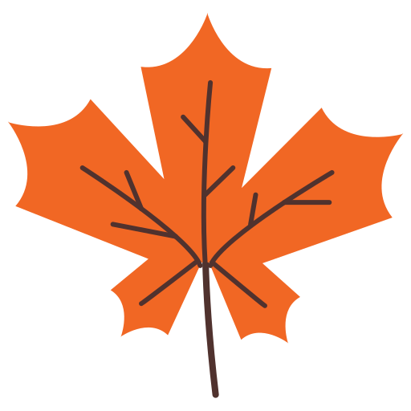
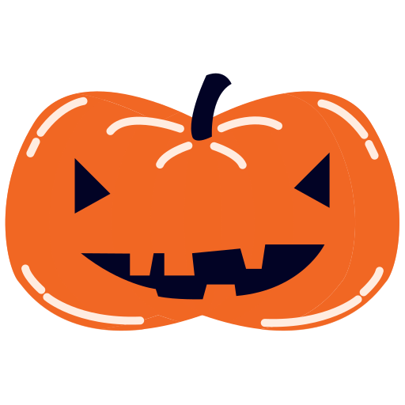

Products and places of Fall!
There are many of family fun things to do in the fall. It is the best time to get outside before the weather gets cold. You can take your family to hayrides, pumpkin patches, apple picking, halloween festivals, dressing up, decorating for the hollidays and many more.
Product Line:
Candy
Eating and collecting Halloween candy is something all kids love to do on October 31st once it gets dark. Many kids dress up in their Halloween costumes and go to parties, trunk-or-treats, and fall festivals.
Apples
Going apple picking with your family at apple orchards is a way to get outside and to also get some fresh fruit. Whille at the apple orchards you can always get fresh baked pastries, apple cider, and many of other apple products.

Fall Leaf
One thing that is always nice to do in the fall time is to drive around and see all the tress changing colors.
Jack-O-Lantern
Picking out pumpkins at the pumpkin patch while taking hayrides is always a family favorite. Once you get home you can carve your pumpkins with funny or scary faces and then bake the pumpkin seeds for a tasty snack.
Costumes
Picking out Halloween costumes and dressing up all month long for fall festivals, trunk-or-treats, and trick-or-treating is always fun and gives you an excuse to get a new outfit.